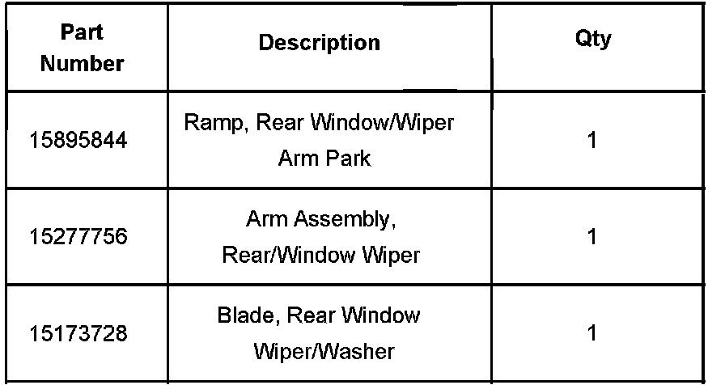
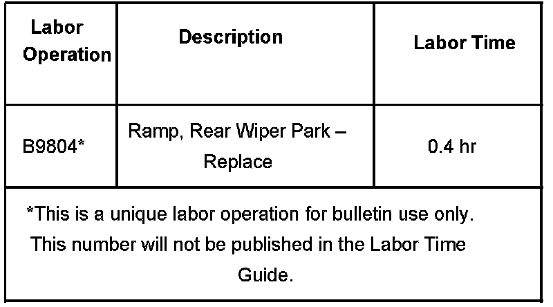

Wipers/Washers - Rear Wiper Broken/Inop After Car Wash
Bulletin No.: 07-08-43-001ADate: January 26, 2007
TECHNICAL
Subject:
Rear Wiper Arm Broken/Inoperative After Using Automatic Carwash (Install Updated Rear Wiper Arm Park Ramp/Stop)
Models:
2007 Cadillac Escalade, Escalade ESV
2007 Chevrolet Suburban, Tahoe
2007 GMC Yukon, Yukon XL, Yukon Denali Models
Built Prior to September 15, 2006
Supercede:
This bulletin is being revised to add vehicle build date information. Please discard Corporate Bulletin Number 07-08-43-001 (Section 08 - Body and Accessories).
Condition
Some customers may comment on a broken or inoperative rear wiper arm after using an automatic carwash.
Cause
The rear wiper arm park ramp/stop cannot properly retain the rear wiper arm in an automatic brush type car wash. The rolling brushes may pull the wiper arm off the rear wiper ramp, causing the arm to bend or break.
Correction
Install an updated rear wiper arm park ramp and replace the rear wiper arm or blade if damaged.
Remove the damaged rear wiper arm/blade assembly. Refer to Rear Window Wiper Blade Replacement in SI.
Remove the old rear wiper arm park ramp. Refer to Wiper Park Ramp Replacement in SI.
Clean any residue left behind from the lift gate wiper arm ramp area.
Install the updated rear wiper arm park ramp.
Install the new rear wiper arm and blade assembly against the updated wiper arm park ramp.
Verify proper operation of rear wiper system.

Parts Information
Warranty Information

For vehicles repaired under warranty, use the table.

Disclaimer